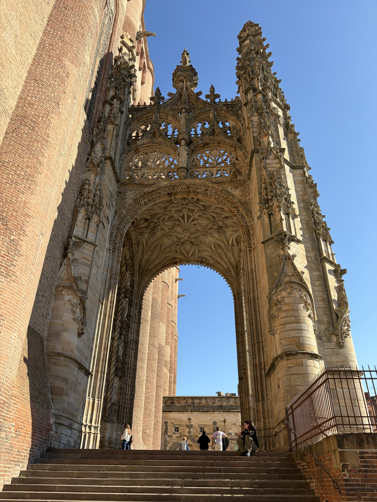
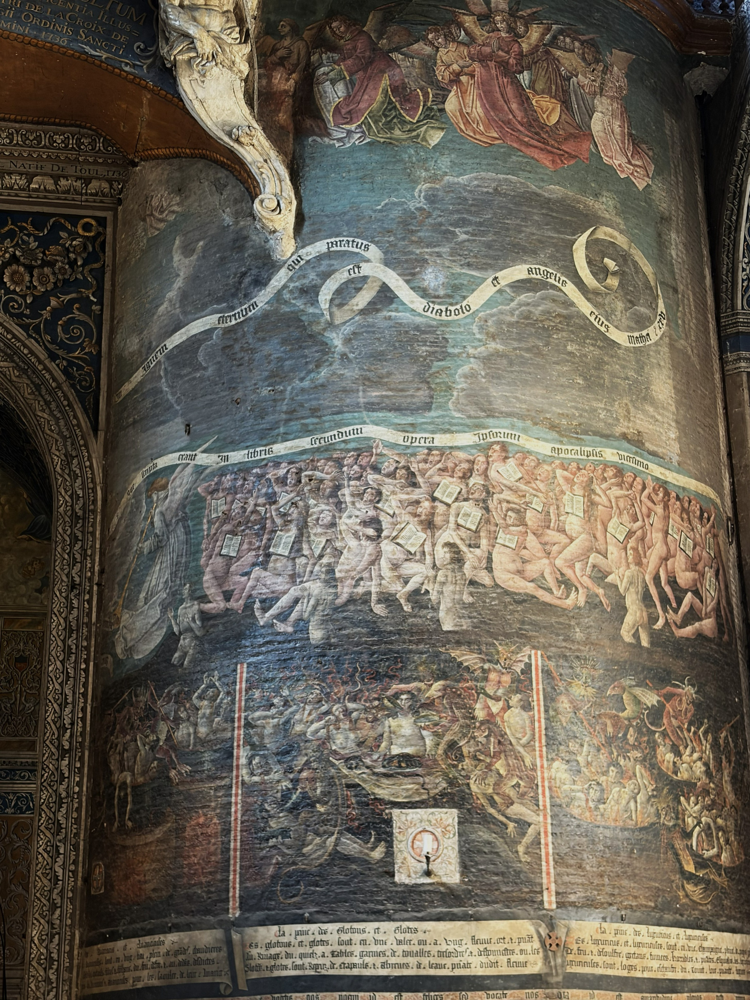
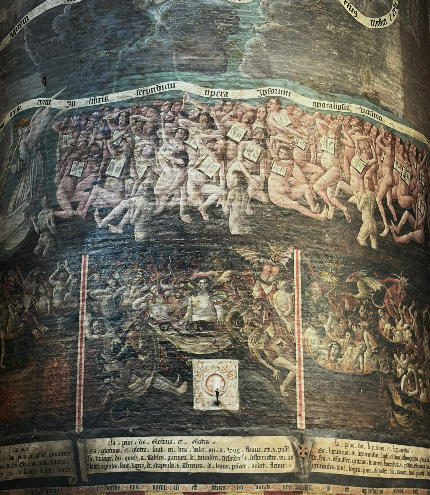
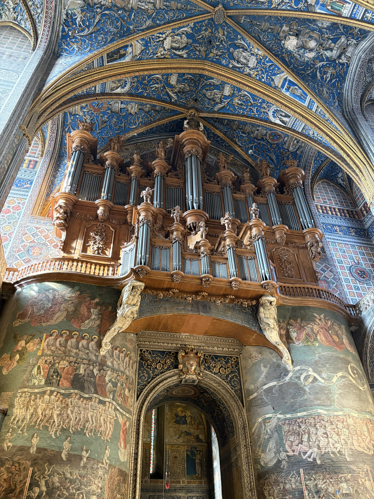
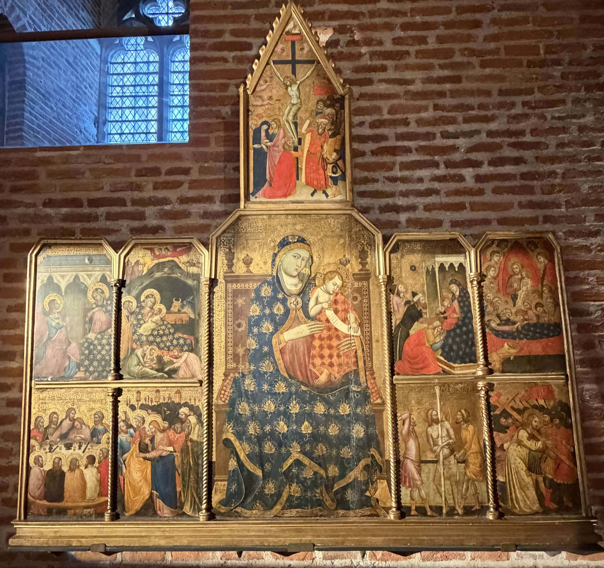
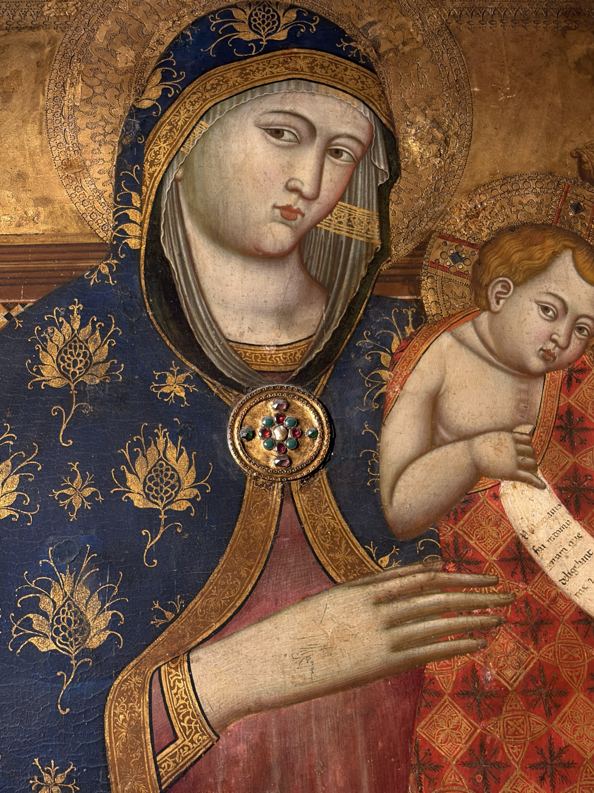
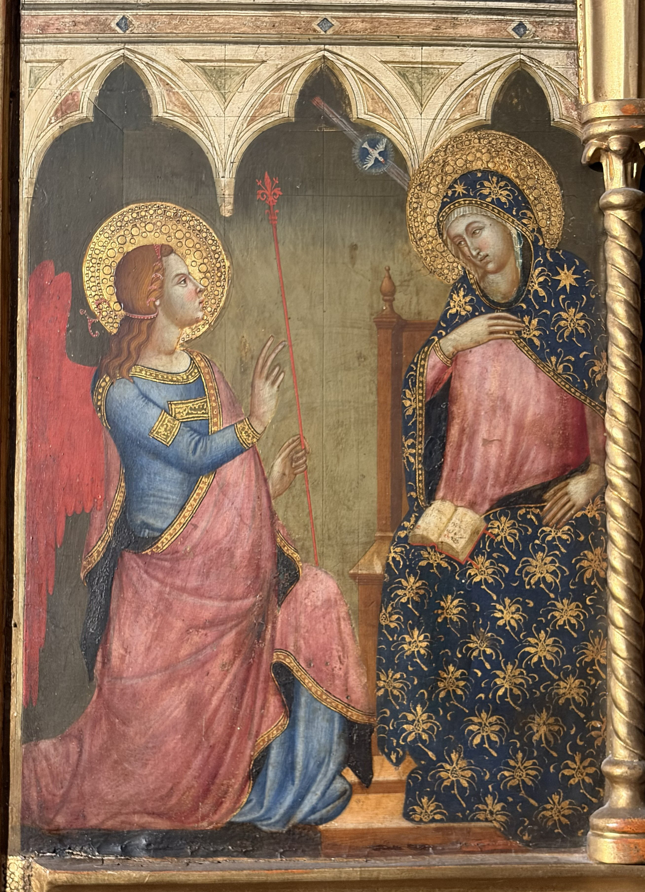
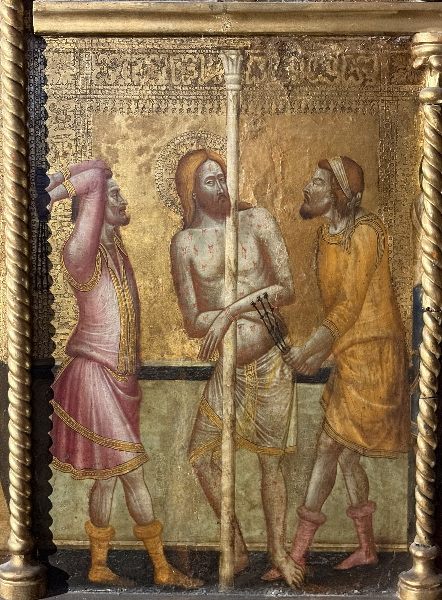
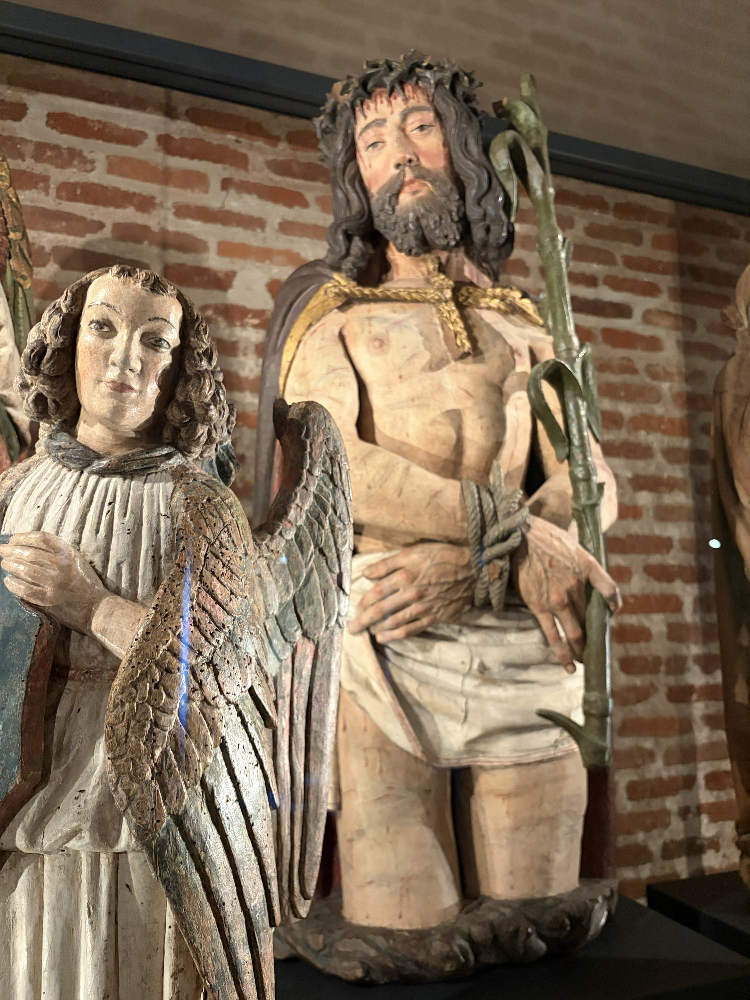
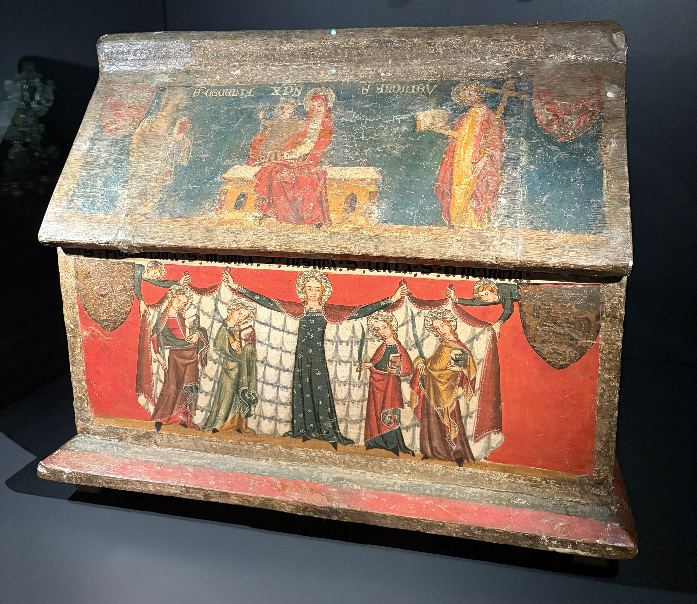

Cathédrale Sainte-Cécile
De l'extérieur, la cathédrale Sainte-Cécile impressionne par sa silhouette massive, presque celle d'une forteresse. Ses immenses murs de brique semblent vouloir protéger un secret.
Mais une fois la porte franchie, tout change. La couleur envahit l'espace, les peintures recouvrent les voûtes et la pierre du jubé se transforme en une délicate dentelle. Partout, des figures, des histoires et des détails attirent le regard.
Du monumental Jugement dernier aux couleurs éclatantes du plafond, Sainte-Cécile réserve un étonnant contraste entre la force de son architecture et la finesse de son décor.
Je vous invite à pousser la porte et à lever les yeux.
Le Jugement dernier

Les élus avancent en rangs ordonnés. Plus bas, les supplices de l’enfer offrent un contraste saisissant avec ce cortège paisible.
Photographie personnelle

Les damnés se pressent, chargés du livre de leurs actes. Sous leurs pieds, les démons et les supplices donnent une forme terrifiante à la condamnation.
Photographie personnelle
Comparez les deux foules : l’ordre des élus à gauche, l’agitation des damnés à droite. Cherchez les livres ouverts sur les poitrines : chacun porte l’histoire de ses actes. Descendez ensuite vers les scènes infernales : repérez les démons, les corps et les instruments de supplice. Comment la composition fait-elle ressentir la différence entre salut et condamnation ?
Cette immense peinture met en images le jugement de l’humanité à la fin des temps. Chacun répond de ses actes : les uns rejoignent le paradis, les autres sont condamnés. Dans la partie basse, les châtiments associés aux péchés capitaux rendent les conséquences du péché concrètes et effrayantes. L’image cherche à frapper les esprits et à inciter les fidèles à orienter leur conduite vers le salut.
Il manque pourtant le centre de cette histoire : la partie où figurait le Christ juge a disparu lors du percement du mur en 1693.
Le jubé et la clôture du chœur

Au-dessus du passage, Charlemagne porte l’épée et le globe, symboles du pouvoir impérial.
Photographie personnelle
Le jubé marque l’entrée du chœur : derrière cette façade ajourée se découvre un autre espace.
Photographie personnelle
Le bleu peut évoquer la Vierge et le monde céleste, le rouge rappeler le sacrifice du Christ et l'amour divin, tandis que le blanc suggère la pureté et la lumière. Mais ces couleurs ont aussi une fonction essentielle : elles donnent vie aux sculptures et rendent ce décor sacré encore plus saisissant.
Photographie personnelle
À mesure que l’on s’approche, de nouvelles formes apparaissent dans les entrelacs sculptés.
Photographie personnelleLe jubé marque la séparation entre la nef, où se tenaient les fidèles, et le chœur réservé aux chanoines. Avec la clôture qui l’entoure, il forme une véritable « église dans l’église ». Dans ce décor gothique flamboyant, la finesse de la pierre et les couleurs accompagnent un ensemble de figures bibliques : la sculpture donne une forme visible au sacré.
Les voûtes peintes — 1509–1512

Feuillages, figures et architectures peintes se déploient entre les nervures. Sur le bleu profond, chaque détail semble appeler le suivant.
Photographie personnelle
Les piliers conduisent le regard jusqu’aux voûtes : la peinture enveloppe l’espace et accompagne l’élan de l’architecture.
Photographie personnelleSuis les nervures, puis explore les surfaces qu’elles délimitent : scènes figurées, médaillons, rinceaux et petits personnages. Observe comment les tons dorés se détachent sur le bleu et comment le décor se prolonge d’une travée à l’autre.
Au début du XVIᵉ siècle, des peintres italiens font entrer le décor de la Renaissance dans une architecture gothique. Autour des scènes religieuses, ils déploient des ornements inspirés de l’Antiquité, mêlant végétaux, figures et formes imaginaires. Les voûtes réunissent ainsi le récit chrétien et un nouveau langage décoratif.
Le trésor

Réalisé en 1345, ce polyptyque appartient à un art médiéval où les images servent à transmettre les récits de la foi. La composition est hiérarchisée : la Vierge domine l'ensemble, tandis que les scènes secondaires complètent le récit.
L'or, les couleurs précieuses et les motifs minutieux ne cherchent pas simplement à embellir l'œuvre. Ils donnent aux personnages une dignité particulière et évoquent un monde sacré, différent du quotidien.
Photographie personnelle
Observez le manteau bleu semé de motifs dorés, les auréoles et les visages délicatement dessinés. Le bleu et l'or soulignent le caractère sacré de la Vierge. Mais regardez aussi les gestes : Marie tient son enfant avec douceur. L'artiste associe ainsi la majesté d'une figure religieuse à la tendresse d'une mère
Photographie personnelle
L'ange Gabriel, reconnaissable à ses ailes, annonce à Marie qu'elle donnera naissance à Jésus. Observez leurs gestes : l'ange semble lui adresser la parole, tandis que Marie porte une main à sa poitrine, signe d'étonnement et d'acceptation. Les auréoles dorées, les vêtements précieux et les arcades gothiques donnent à cette rencontre un caractère solennel.
Photographie personnelle
Attaché à une colonne, le Christ subit la flagellation avant sa crucifixion. Son corps porte les marques des coups, tandis que deux bourreaux s'affairent autour de lui. Regardez le contraste entre leurs gestes violents et l'attitude presque immobile de Jésus. Le peintre oppose ainsi la brutalité des hommes à la résignation du Christ.
Photographie personnelle
Couronné d'épines, le Christ est présenté après avoir été humilié et maltraité, avant sa crucifixion. « Ecce Homo » signifie « Voici l'homme », les mots prononcés par Ponce Pilate en le montrant à la foule. Observez son corps blessé et son expression douloureuse : le sculpteur cherche à éveiller la compassion du fidèle. L'origine de cette sculpture reste mystérieuse : certains pensent qu'elle pourrait provenir de l'ancien orgue gothique de la cathédrale.
Photographie personnelle
Derrière ses couleurs vives et ses personnages minutieusement peints, cet objet avait une fonction sacrée : conserver et protéger des reliques. Pour les fidèles du Moyen Âge, ces fragments associés aux saints étaient particulièrement précieux. Le reliquaire leur offrait un écrin digne de leur importance, tout en racontant une histoire à travers ses images.
Photographie personnelleQue trouve-t-on dans le trésor d'une cathédrale ? Pas nécessairement de l'or ou des pierres précieuses ! On y conserve des objets qui ont accompagné la vie religieuse pendant des siècles : reliquaires, peintures, sculptures et objets utilisés lors des cérémonies.
Certains étaient destinés à être admirés, d'autres à être manipulés ou portés en procession. Tous racontent, à leur manière, l'histoire de la foi, des artistes et des hommes qui les ont préservés.